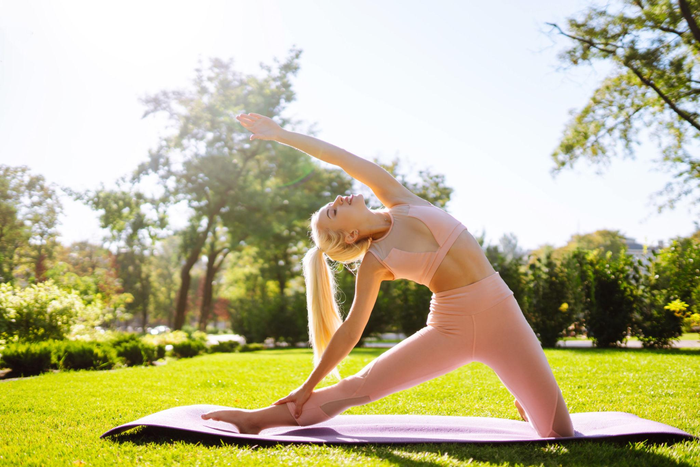
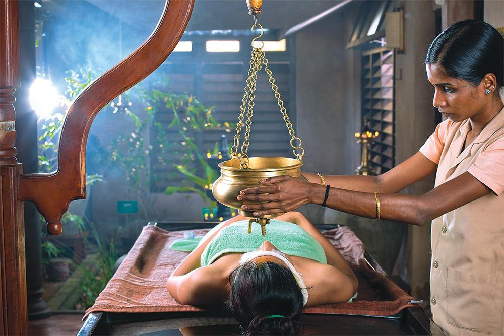
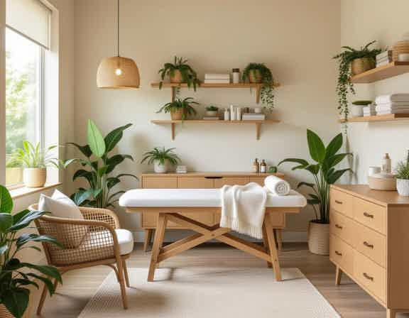
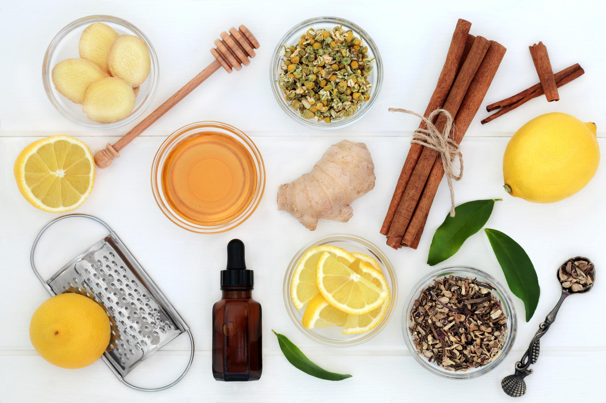
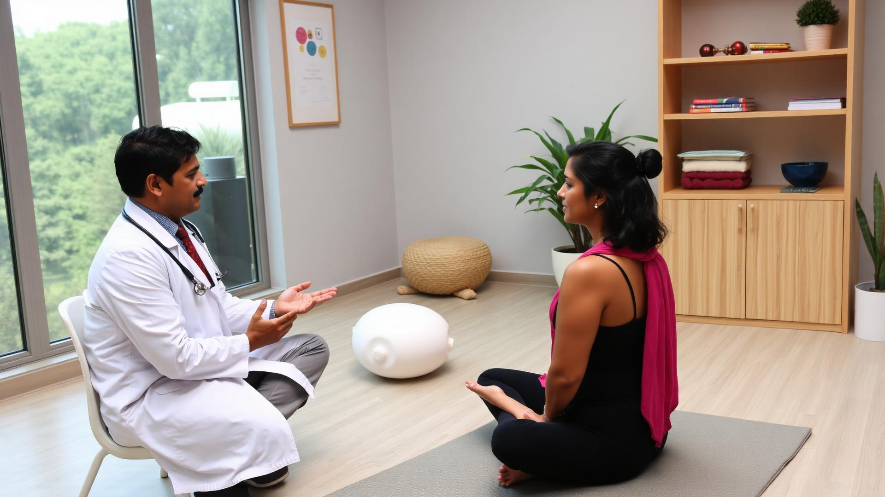
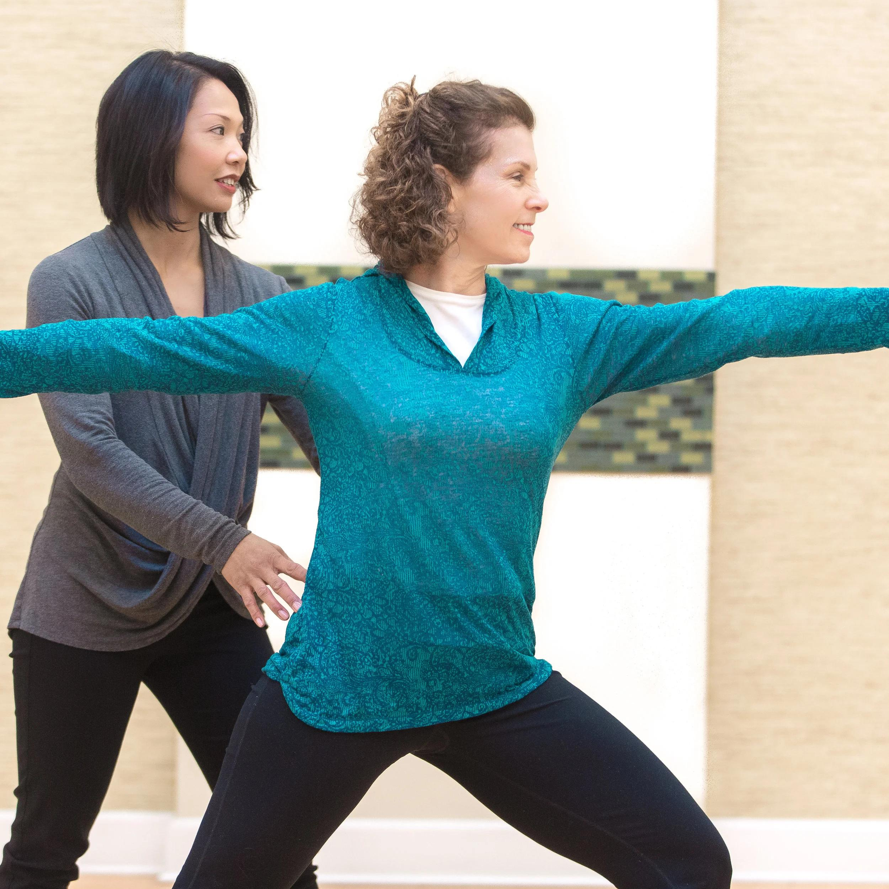
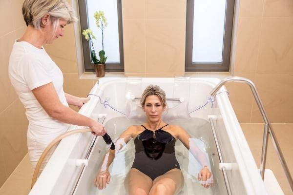
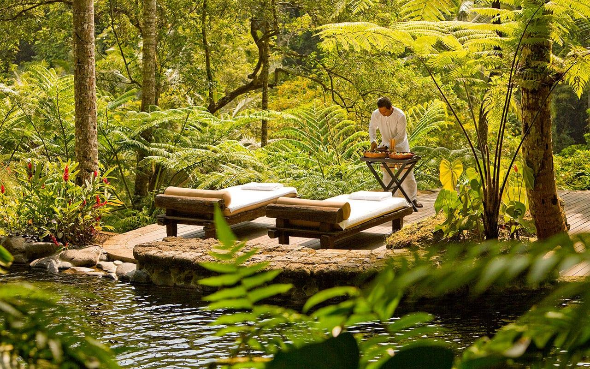
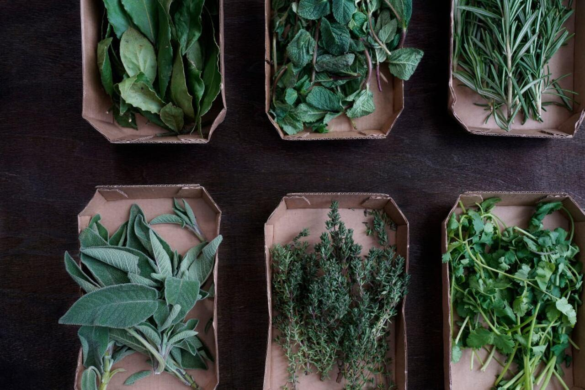

Our multi-modality programs provide structured pathways for individuals seeking
to pause, re-calibrate, and cultivate durable health habits. Led by experienced
naturopathic physicians and certified yoga therapists, each program harmonizes
movement, natural therapies, and lifestyle education.
Choose a program calibrated to your personal intentions. Every program is customized during intake to match your physical readiness and health history.

Program 01A guided yoga-focused experience featuring gentle movement, breathing awareness, and mindful practice to liberate physical stiffness and cultivate joint lightness.
2 Therapeutic Yoga Sessions, 1 Breathwork Circle, Guided Garden Walk.

Program 02An experiential introduction to classical naturopathy practices and nature-inspired wellness approaches designed to support circulatory vitality.
Physician Intake, Hydro Jet Session, Pelotherapy Wrap, Herbal Tea Service.

Program 03A peaceful experience featuring guided relaxation, sound immersion, and mindfulness practices dedicated to soothing mental fatigue.
Restorative Yoga Class, Sound Immersion, 60-min Oil Body Therapy, Herbal Elixir.
 Program 04
Program 04
A lifestyle-focused program exploring balanced routines, everyday wellness habits, and practical home strategies for sustainable wellbeing.
2 Lifestyle Workshops, Sattvic Lunch, Reflexology Walk, Personal Home Routine Plan.

Program 05An educational experience focused on healthy eating habits, whole-food plant nutrition, and constructive dialogue on food synergy.
Nutritionist Intake, Botanical Tea Tasting, Garden Herb Tour, 3-Week Meal Framework.

Program 06A comprehensive consultation-led experience exploring relevant wellness interests, personal mobility levels, and suitable activities.
Comprehensive Intake, 4 Curated Therapies, Mid-Program Review, Digital Dashboard Integration.
Every signature retreat blends four clinical pillars: private biomechanical alignment, hydrothermal recovery, open-air nature immersion, and living garden nutrition.




How each hour is deliberately synchronized with your body's natural biorhythms for restorative physiological recovery.
 06:00 AM — Dawn Photic Lux
Elemental Phase: Prana & Sun
06:00 AM — Dawn Photic Lux
Elemental Phase: Prana & Sun
Welcoming morning photons on our panoramic open-air terrace. Morning outdoor lux (1,000–10,000 lux) activates intrinsically photosensitive retinal ganglion cells, signaling the suprachiasmatic nucleus to reset endocrine timing, calibrate healthy cortisol release, and promote vibrant daytime alertness.